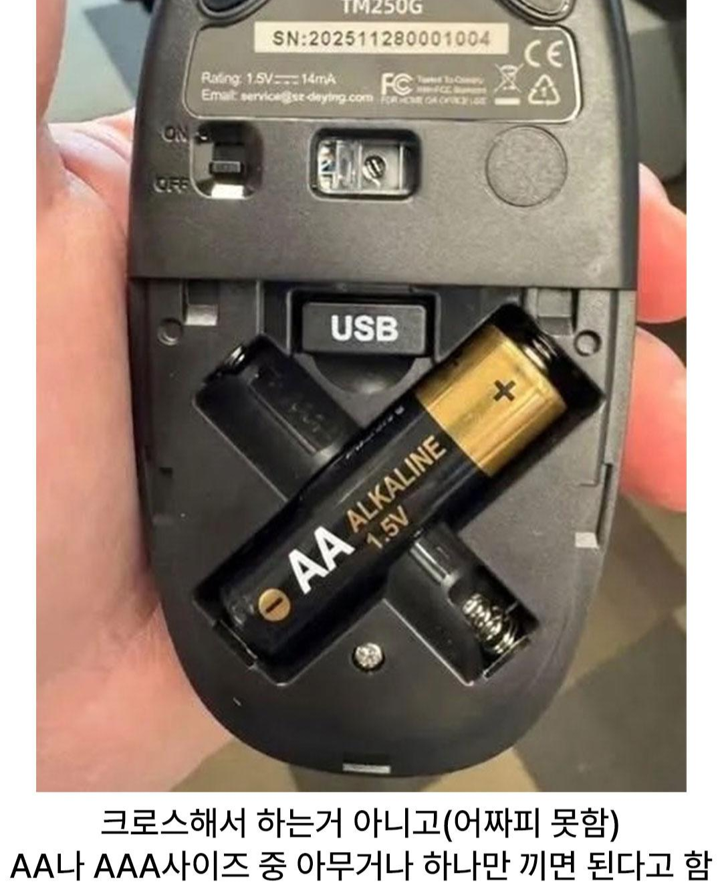

무선마우스 설계.jpg
댓글
아니 한칸으로 만들어도 어차피 한개밖에 못넣잖아
네말은 한칸으로 하고 거기에 aa도 들어가고 aaa도 들어가는 한칸으로 만들면 되지 않냐는거지? 그걸 어떻게 만들어? 디자인이 안떠오르는데
aa/aaa충전기에 흔하게 쓰이는 디자인인데aaa용 홈을 살짝 깊게 파거나 하는식으로 한군데 다 들어담
마우스라 같은 구멍에 aaa넣으면 흔들려서 접불날까봐 그런듯
https://www.ikea.com/ca/en/p/stenkol-battery-charger-50506525/?gclsrc=aw.ds&&matchtype=&device=m&gad_source=1&gad_campaignid=24004212673&gbraid=0AAAAACqC6EqutWIDvkkzcUrzbG4-0DEXN
내가 미안하다.. 둘다 넣는 문제도 있고 무게중심 생각했을수도 있을듯?
사진 보니까 나사 들어가야 하는곳 피하려고 저렇게 한걸수도 있는데 그렇더래도 대각으로 겹치면 되는데 x로 해놓은게 왜그런걸까 어떤 공학적 이유가 있는걸까 싶었는데 그냥 한걸수도
둘 중에 하나만 넣을 수 있게
Aa어쩌구저쩌구
둘중에 하나만 쓰라고 저런거잖아
AA소켓 AAA소켓 파놓고 아무 배터리나 쓰는거라고 본문에 적혀있잖아..
AA소켓 AAA소켓 파놓고 아무 배터리나 쓰는거라고 본문에 적혀있잖아..
AA소켓 AAA소켓 파놓고 아무 배터리나 쓰는거라고 본문에 적혀있잖아..
AA소켓 AAA소켓 파놓고 아무 배터리나 쓰는거라고 본문에 적혀있잖아..
AA소켓 AAA소켓 파놓고 아무 배터리나 쓰는거라고 본문에 적혀있잖아..
AA소켓 AAA소켓 파놓고 아무 배터리나 쓰는거라고 본문에 적혀있잖아..
8 시간 전
@행운의편지
AA소켓 AAA소켓 파놓고 아무 배터리나 쓰는거라고 본문에 적혀있잖아..
크로스하면 히든모드 열림
나라면 2개끼울수있다
끼다 불나는거 아녀?
요즘 중국산 마우스 너무 잘나와서 센서도 최상급으로 나오고 쉘도 카피해서 유명 마우스 쉘은 중국에 다있음
fps유저라도 그립테이프 붙여서 쓰면 코팅 상관없이 사용가능하니깐 진짜 20만원짜리나 5만원짜리나 성능차는 진짜 미미함
로지텍의 지슈스도 한번 돌풍이 불었는데 중국에서 카피했더라 진짜 이젠 독창성 아니면 중국 못이긴다
좆지텍 이 개병신들 옴차 안쓰고 옴재만 썼어도 의리로라도 사줬다
개시발 새끼들
오? 지슈스 카피품나왔습니까
암만 중국욕해도 다 중국산 애용함ㅋㅋㅋㅋㅋ
맨날 로지텍 더블클릭 지랄나서 걍 어디껀지도 모르는 핫스왑 되는 마우스로 사서 스위치만 바꿔댐
더블클릭 때문이면 그냥 광축있는 라인업을 사면 되잖아
공학적으로 잘한 설계인것 같은데.
모지리가 aaa 랑 aa 두개 넣고 마우스 터지는걸 물리적으로 방어한 설계인듯
한굼멍에 둘 다 넣게해도 절대로 두개 한번에 못끼움
한 구멍에 두개 넣는 방식은 대신 깊이가 깊어지는데 그 정도 공간이 없었나보지
쟤는 나란히 두는 걸 얘기한듯
오
마우스 5만원 이하로만 사다가 저번달에 큰맘먹고 20만원대 바이퍼v4 샀는데 개좋다 무선인데 배터리가 개깡패ㅋㅋㅋㅋ
보통 가볍게 쓸사람은 AAA넣고 쓰라고 나오는거 있던데
저건 경량마우스는 아니고 그냥 편하라고 한거네
나라면 두개 끼울수있다! 나라면!!
가운대에 전선 하나 넣고 코인전지로 채워버리기
난아직도 지원씀 수리품 평생쓸만큼쟁겨놧음
아이디어 좋네유.
중량도 줄이고
배터리 호환성도 키우고!
극이 바뀐거 아녀
어짜피 못함????? ㅋㅋㅋㅋ
야 나와바 ㅋㅋ
형 건전지 뭐사와?
응 길쭉한거 아무거나 사와
LR44 건전지 끼고 은박지로 연결해야하나 생각했네
우리집에 x자 배터리 없는데ㅠㅠ
무게중심 때문에 그런거 아닐까 세로로 넣으면 한쪽으로 치우치게 되니까
일자로 두칸놓고 병렬로 하는것도 갠찬을거같은디 ㅋㅋ
근데 플러스 마이너스 반대로 끼운거 아니냐
double penetration
x자로 하면 두개 절대 못넣잖아